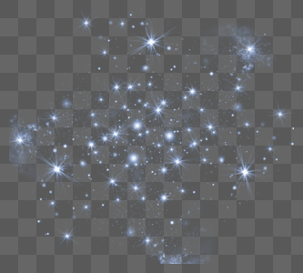

There are NINE planets in the solar system.But now we have only EIGHT planets.They are Mercury,Venus,Earth,Mars,Jupiter,Saturn,Uranus,and Neptune.The ninth planet PLUTO is now classified as dwarf planet.
MERCURY
The ITALIAN astronomer ZUPUS first observed the phases of mercury in 1639.They were later observed independently by HEVELIUS in 1644.
Smallest but bigger than Earth's Moon.
Mercury has no moon.
Mercury is the fastest planet,zipping around the Sun every 88 Earth days.
VENUS
The first person to look at Venus in a telescope was that astronomer GALILEO GALILEI.
Venus is one of the four terrestrial planets in the Solar system,meaning that it is a rocky body like Earth.
Venus has an iron core but no magnetic field.
The year length of Venus is 225 Earth days.
EARTH
Earth was never formally discovered because it was never an unrecognized entity by humans.
True shape of the Earth an OBLATE SPHERIOD.
Earth is the third planet from the sun and the only world known to support an atmosphere with free oxygen,oceans of liquid water on the surface and life
Earth has a diameter of roughly 8,000 miles(13,000 kilometers)
MARS
The first telescopic observation of Mars was by GALILEO GALILEL in 1610.
Mars is one of the easiest planets to spot in the night sky – it looks like a bright red point of light.
Mars is the second smallest planet in the solar system, only larger than Mercury and slightly more than half the size of Earth. It has an equatorial radius of 3,396 km (2,110 miles) and a mean polar radius of 3,379 km (2,100 miles).
JUPITER
Jupiter, the most massive planet of the solar system. It is one of the brightest objects in the night sky; only the Moon, Venus, and sometimes Mars are more brilliant. Jupiter is designated by the symbol ♃.
It takes nearly 12 Earth years to orbit the Sun, and it rotates once about every 10 hours, more than twice as fast as Earth.
It has a narrow system of rings and 92 known moons, one larger than the planet Mercury and three larger than Earth’s Moon. Some astronomers speculate that Jupiter’s moon Europa may be hiding an ocean of warm water and possibly even some kind of life beneath an icy crust.
SATURN
GALILEO GALILEI was the first to observe Saturn with a telescope in 1610.
He incorrectly guessed that there were two large moons on either side of Saturn.Two years later when he viewed Saturn again,the "moons"had disappeared.
When viewed through even a small telescope, the planet encircled by its magnificent rings is arguably the most sublime object in the solar system. Saturn is designated by the symbol ♄.
Saturn also was noted to be the slowest-moving. At a distance from the Sun that is 9.5 times as far as Earth’s, Saturn takes approximately 29.5 Earth years to make one solar revolution.
URANUS
The planet Uranus was discovered by WILLIAM HERSCHEL on March 13,1781.He discovered Uranus while surveying stars in the night sky.
Uranus contains methane gas. Methane gas makes Uranus appear blue. Uranus also contains a lot of hydrogen and helium.
Uranus has 27 moons. That’s not as many moons as Jupiter, but Uranus still has nine times as many moons as the four inner planets.
While most planets were named after Roman Gods, Uranus was named after the Greek god of the sky. Uranus is the father of Cronus — Saturn — and the grandfather of Zeus — Jupiter.
NEPTUNE
JOHANN GOTTFRIED GALLE,URBAIN JEAN JOSEPH LE VERRIER,and JOHN COUCH ADAMS all worked independently to find Neptune which is distant from world,which isn't visible to the eye.
More than 30 times as far from the Sun as Earth, Neptune is not visible to the naked eye. In 2011, Neptune completed its first 165-year orbit since its discovery.
The planet’s rich blue color comes from methane in its atmosphere, which absorbs red wavelengths of light but allows blue ones to be reflected back into space.
STARS
A star is an astronomical object comprising a luminous spheroid of plasma held together by self-gravity.
The most prominent stars have been categorised into constellations and asterisms, and many of the brightest stars have proper names
A star's life begins with the gravitational collapse of a gaseous nebula of material largely comprising hydrogen, helium, and trace heavier elements.
This process releases energy that traverses the star's interior and radiates into outer space. At the end of a star's lifetime, its core becomes a stellar remnant: a white dwarf, a neutron star, or if it is sufficiently massive—a black hole.
Stars can form orbital systems with other astronomical objects, as in planetary systems and star systems with two or more stars. When two such stars orbit closely, their gravitational interaction can significantly impact their evolution. Stars can form part of a much larger gravitationally bound structure, such as a star cluster or a galaxy.
The formation of a star begins with gravitational instability within a molecular cloud, caused by regions of higher density often triggered by compression of clouds by radiation from massive stars, expanding bubbles in the interstellar medium, the collision of different molecular clouds, or the collision of galaxies (as in a starburst galaxy)

During their helium-burning phase, a star of more than 9 solar masses expands to form first a blue and then a red supergiant. Particularly massive stars may evolve to a Wolf–Rayet star, characterised by spectra dominated by emission lines of elements heavier than hydrogen.
A binary star or binary star system is a system of two stars that are gravitationally bound to and in orbit around each other.
The interior of a stable star is in a state of hydrostatic equilibrium: the forces on any small volume almost exactly counterbalance each other. The balanced forces are inward gravitational force and an outward force due to the pressure gradient within the star.
Variable stars have periodic or random changes in luminosity because of intrinsic or extrinsic properties. Of the intrinsically variable stars, the primary types can be subdivided into three principal groups.
The energy produced by stars, a product of nuclear fusion, radiates to space as both electromagnetic radiation and particle radiation. The particle radiation emitted by a star is manifested as the stellar wind which streams from the outer layers as electrically charged protons and alpha and beta particles.
GALAXY
A galaxy is a system of stars, stellar remnants, interstellar gas, dust, and dark matter bound together by gravity.
Galaxies, averaging an estimated 100 million stars,range in size from dwarfs with less than a hundred million stars, to the largest galaxies known – supergiants with one hundred trillion stars.
Galaxies were initially discovered telescopically and were known as spiral nebulae. Most 18th- to 19th-century astronomers considered them as either unresolved star clusters or anagalactic nebulae, and were just thought of as a part of the Milky Way, but their true composition and natures remained a mystery.
The realization that we live in a galaxy that is one among many parallels major discoveries about the Milky Way.
Greek philosopher DEMOCRITUS(450–370 BCE) proposed that the bright band on the night sky known as the Milky Way might consist of distant stars.
Aristotle (384–322 BCE), however, believed the Milky Way was caused by "the ignition of the fiery exhalation of some stars that were large, numerous and close together" and that the "ignition takes place in the upper part of the atmosphere, in the region of the World that is continuous with the heavenly motions.
GALAXY MORPHOLOGICAL CLASSIFICATION
Ellipticals
Type-cD galaxies
Shell galaxy
Spirals
Barred Spiral Galaxy
Super-Luminous Spiral
Other Morphologies
Dwarfs
UNIVERSE
The universe is all of space and time and their contents,including planets, stars, galaxies, and all other forms of matter and energy.
The Big Bang theory is the prevailing cosmological description of the development of the universe. According to this theory, space and time emerged together 13.787±0.020 billion years ago.
According to the Big Bang theory, the energy and matter initially present have become less dense as the universe expanded. After an initial accelerated expansion called the inflationary epoch at around 10−32 seconds.
 VENUS
VENUS
 MARS
MARS
 JUPITER
JUPITER
 SATURN
SATURN
 NEPTUNE
NEPTUNE